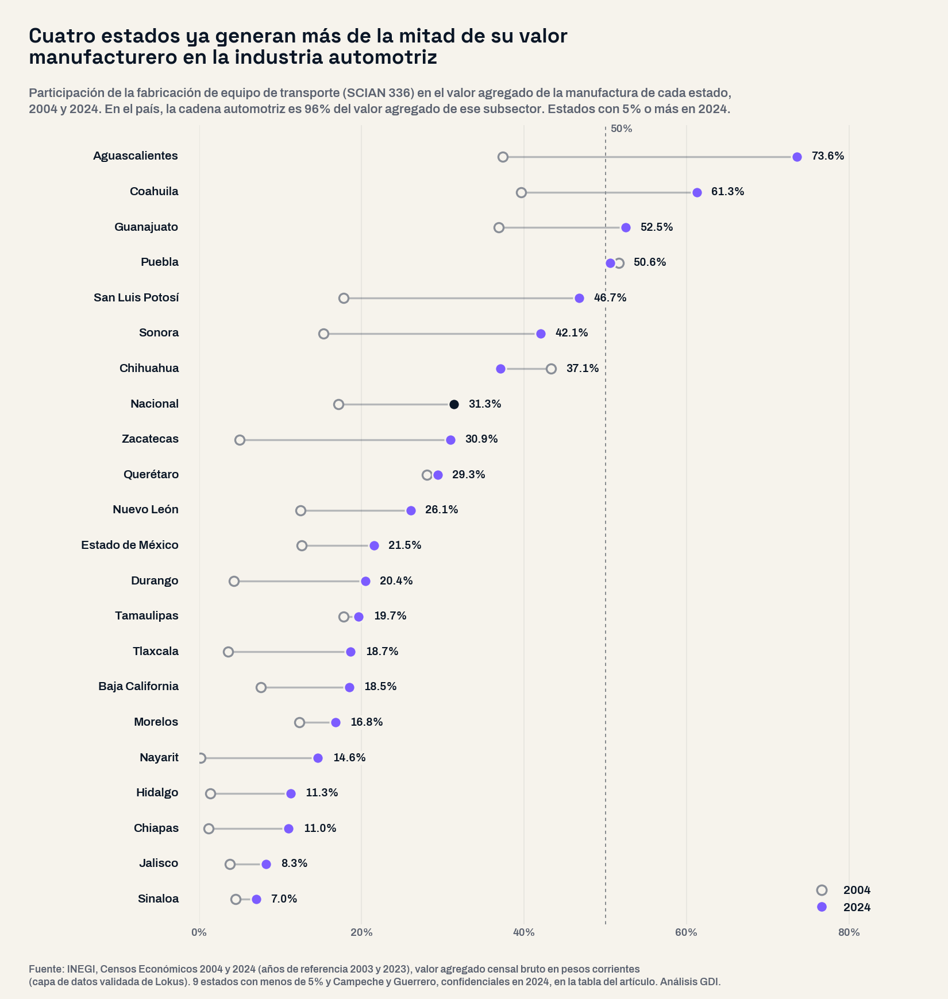
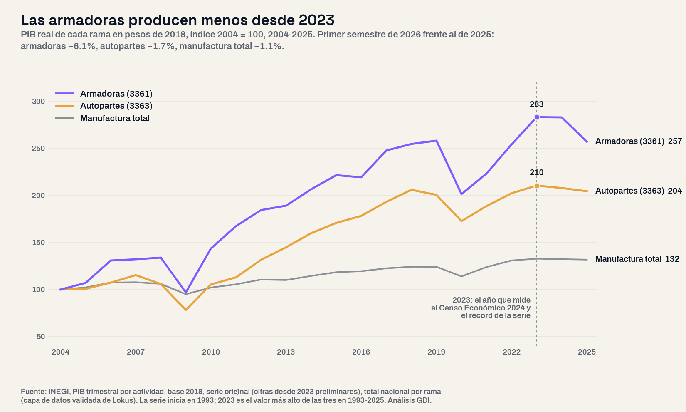

Este análisis partió de una pregunta abierta: ¿qué estados dependen de la cadena automotriz, cuánto creció esa dependencia en veinte años, cuánto del valor que genera llega a las remuneraciones de quienes trabajan en ella y cómo llega el sector a 2026? Se ordenaron los 32 estados por el peso de la industria en su valor agregado manufacturero, sin preseleccionar regiones, con los cinco Censos Económicos del INEGI (2004 a 2024), y se cruzó, como columna aparte, con el PIB trimestral por actividad, que mide la producción real hasta el segundo trimestre de 2026.
Una precisión de método. El Censo Económico 2024 mide la actividad de 2023, en pesos corrientes: las proporciones de un mismo año se comparan entre censos, los montos no. La cadena automotriz son tres ramas: armadoras de automóviles y camiones (SCIAN 3361), carrocerías y remolques (3362) y autopartes (3363). Por estado se usa el subsector completo de equipo de transporte (336), porque la rama de las armadoras es confidencial en 10 de los 17 estados donde existe. En el país, la cadena automotriz es 96% del valor agregado de ese subsector, y en Aguascalientes, Guanajuato y Puebla más de 99.9%.
Radiografía: de 17 a 30 de cada 100 pesos de la manufactura
En 2004 la cadena automotriz ocupaba a 498,975 personas; en 2024, a 1,382,996, 2.8 veces más. Pasó de 11.9% a 19.2% del empleo manufacturero y de 16.9% a 30.1% del valor agregado de la manufactura; contra todo el valor agregado que mide el Censo, de 4.8% a 10.4%. El PIB trimestral confirma que no es solo efecto de precios: descontada la inflación, la producción de las armadoras creció 183% entre 2004 y 2023 y la de autopartes 110%, contra 33% de toda la manufactura.
La mayor parte del empleo está en las autopartes: 1,203,759 personas (87.0% de la cadena), contra 136,982 en las armadoras (9.9%) y 42,255 en carrocerías y remolques. Solo la fabricación de equipo eléctrico y electrónico para vehículos, donde están los arneses, ocupa a 514,325 personas, 37.2% de toda la cadena; 49.7% son mujeres.

Alerta 1: cuatro estados por encima de la mitad
En 2024, Aguascalientes (73.6%), Coahuila (61.3%), Guanajuato (52.5%) y Puebla (50.6%) generan más de la mitad de su valor agregado manufacturero en la industria automotriz. En 2004 solo Puebla pasaba esa línea (51.6%); Aguascalientes estaba en 37.4%, Coahuila en 39.6% y Guanajuato en 36.9%. Los estados por encima de 30% pasaron de 5 a 8: se sumaron San Luis Potosí (46.7%, desde 17.8%), Sonora (42.1%) y Zacatecas (30.9%). Chihuahua y Puebla son los únicos de ese grupo donde el peso bajó.
Medida contra toda la economía que registra el Censo, la dependencia es igual de visible. En Aguascalientes, 46.6% de todo el valor agregado censal del estado sale de la industria automotriz, contra 20.2% en 2004; en Coahuila, el subsector de equipo de transporte genera 45.6% (desde 22.5%) y ocupa a 25.5% de todo el personal que registra el Censo en el estado, uno de cada cuatro. Le siguen Guanajuato (34.2%) y San Luis Potosí (28.2%). En Coahuila, aun descontando la fabricación de equipo ferroviario, aeroespacial y de otro equipo de transporte, la cadena automotriz rebasa 58% de su valor manufacturero.
| Estado | Personal ocupado en equipo de transporte, 2024 | Peso en el valor agregado manufacturero, 2004 | Peso en el valor agregado manufacturero, 2024 | Peso en todo el valor agregado del estado, 2024 | Remuneraciones por cada 100 pesos de valor agregado, 2024 |
|---|---|---|---|---|---|
| Aguascalientes | 68,034 | 37.4% | 73.6% | 46.6% | 10.6 |
| Coahuila | 250,861 | 39.6% | 61.3% | 45.6% | 14.6 |
| Guanajuato | 135,943 | 36.9% | 52.5% | 34.2% | 10.5 |
| Puebla | 61,223 | 51.6% | 50.6% | 23.7% | 13.5 |
| San Luis Potosí | 75,910 | 17.8% | 46.7% | 28.2% | 18.6 |
| Sonora | 63,937 | 15.3% | 42.1% | 17.9% | 14.7 |
| Chihuahua | 204,268 | 43.3% | 37.1% | 19.8% | 36.5 |
| Zacatecas | 28,224 | 5.0% | 30.9% | 6.2% | 63.0 |
| Querétaro | 77,998 | 28.1% | 29.3% | 17.0% | 26.7 |
| Nuevo León | 129,591 | 12.5% | 26.1% | 12.3% | 16.6 |
| Estado de México | 68,067 | 12.6% | 21.5% | 9.8% | 14.3 |
| Durango | 40,754 | 4.3% | 20.4% | 8.3% | 53.0 |
| Tamaulipas | 104,697 | 17.8% | 19.7% | 10.0% | 56.4 |
| Tlaxcala | 16,082 | 3.6% | 18.7% | 11.8% | 31.1 |
| Baja California | 56,267 | 7.6% | 18.5% | 9.0% | 28.7 |
| Morelos | 7,953 | 12.3% | 16.8% | 6.3% | 24.6 |
| Nayarit | 6,857 | 0.2% | 14.6% | 1.6% | 76.2 |
| Hidalgo | 8,759 | 1.3% | 11.3% | 5.7% | 19.1 |
| Chiapas | 4,718 | 1.1% | 11.0% | 1.7% | 26.1 |
| Jalisco | 38,190 | 3.8% | 8.3% | 3.4% | 30.4 |
| Sinaloa | 14,342 | 4.5% | 7.0% | 1.2% | 64.2 |
| Yucatán | 6,423 | 0.2% | 4.8% | 1.1% | 52.2 |
| Colima | 3,485 | 1.0% | 4.4% | 0.5% | 77.9 |
| Ciudad de México | 15,599 | −1.5% | 3.2% | 0.2% | 42.8 |
| Baja California Sur | 89 | n.d. | 0.5% | 0.02% | 54.5 |
| Veracruz | 1,734 | 0.1% | 0.4% | 0.2% | 53.6 |
| Tabasco | 456 | 0.03% | 0.3% | 0.01% | 81.5 |
| Oaxaca | 294 | 0.01% | 0.2% | 0.1% | 43.6 |
| Michoacán | 245 | 0.3% | 0.1% | 0.02% | 46.8 |
| Quintana Roo | 347 | n.d. | −0.5% | −0.02% | n.d. |
| Campeche | Confidencial | n.d. | n.d. | n.d. | n.d. |
| Guerrero | Confidencial | 0.2% | n.d. | n.d. | n.d. |
| Nacional | 1,491,778 | 17.1% | 31.3% | 10.8% | 18.4 |
Subsector 336, fabricación de equipo de transporte; filas sombreadas: más de 50% del valor agregado manufacturero. Valores negativos: el Censo registró valor agregado negativo del subsector (consumo intermedio mayor que la producción) en la Ciudad de México en 2004 y en Quintana Roo en 2024. n.d.: confidencial o sin dato. Fuente: INEGI, Censos Económicos 2004 y 2024 (capa de datos validada de Lokus).
Alerta 2: el valor que no llega a la nómina
La cadena no reparte su valor de forma pareja. Las armadoras generan 50.1% del valor agregado de toda la cadena con 9.9% de su personal, y de cada 100 pesos de valor agregado que producen, 4.3 se pagan como remuneraciones; el resto es excedente bruto de operación de las empresas. En las autopartes la proporción es 30.8 y en el conjunto de la manufactura 24.1. En las armadoras ese indicador bajó en cada censo: 15.0 en 2004, 14.7 en 2009, 10.3 en 2014, 7.7 en 2019 y 4.3 en 2024. La reforma de subcontratación de 2021 obligó a pasar a la nómina propia a personal que antes llegaba por terceros (el personal dependiente de las armadoras pasó de 80.6% a 97.3% del total), un cambio que por sí solo tendería a elevar la proporción, y aun así llegó a su nivel más bajo.
El patrón se repite por estado. Donde pesan las armadoras, la proporción del subsector es baja: Guanajuato 10.5, Aguascalientes 10.6, Puebla 13.5 y Coahuila 14.6 pesos de cada 100. En Chihuahua, donde la industria es sobre todo de autopartes, es 36.5. Para un gobierno estatal la diferencia importa: el impuesto sobre nóminas que cobran los estados se calcula sobre las remuneraciones, no sobre el valor de la producción, y el ingreso que circula en la economía local depende de lo que se paga a quienes trabajan en el estado.
Alerta 3: el Censo retrató el mejor año, y desde entonces la producción cae
El año que mide el Censo Económico 2024, 2023, fue el de mayor producción real de armadoras, autopartes y manufactura en toda la serie del PIB trimestral, que inicia en 1993. Desde entonces la tendencia cambió. La producción real de las armadoras bajó 0.1% en 2024 y 9.1% en 2025, la mayor caída desde 2020; en 2025 produjeron menos que en 2019. Por trimestre, la caída anual fue de 17.0% en el tercero de 2025, 12.0% en el cuarto, 10.1% en el primero de 2026 y 2.3% en el segundo: se moderó, pero no ha terminado. En el primer semestre de 2026 las armadoras produjeron 6.1% menos que un año antes y las autopartes 1.7% menos; la producción de autopartes de 2025 ya estaba por debajo de la de 2018.

Las exportaciones del subsector de equipo de transporte, en dólares, tampoco crecen: sumaron 104,780 millones en el primer semestre de 2026, 0.4% más que un año antes, mientras las exportaciones totales de los estados crecieron 25.1%; su peso en el total bajó de 37.0% a 29.7%. Ya habíamos documentado que el auge exportador de 2026 se concentró en la electrónica de dos estados; el corredor automotriz quedó fuera.
Implicaciones para la gestión pública
1. La dependencia se mide con el dato del propio estado. En Aguascalientes, Coahuila, Guanajuato y Puebla, un plan estatal de desarrollo que no incluya el peso de la industria automotriz y su seguimiento trimestral deja fuera el principal riesgo de su economía. Lo mismo vale para los planes de los municipios donde están las plantas; nuestra guía del plan municipal de desarrollo explica cómo construir ese diagnóstico con fuentes oficiales.
2. Leer la producción junto con la nómina. Un informe que presente el valor producido por la industria como prueba de desarrollo debe acompañarlo de las remuneraciones. En Guanajuato y Aguascalientes, de cada 100 pesos de valor agregado del subsector, 10.5 y 10.6 se pagan a quienes trabajan en él.
3. Preparar la respuesta laboral antes de que llegue. Con la producción de las armadoras a la baja desde 2023, los gobiernos de los estados más dependientes necesitan programas de capacitación y de vinculación con otras industrias. La cadena ocupa a 562,696 mujeres (40.7% de su personal) y en arneses y asientos son la mitad: una contracción ahí también es un asunto de cuidados y de empleo femenino.
4. Diversificar sin esperar la crisis. Chihuahua muestra que el peso de una industria también puede bajar: tenía 36.2% del empleo nacional en autopartes en 2004 y 14.7% en 2024, y el peso del equipo de transporte en su manufactura bajó de 43.3% a 37.1%. Ya habíamos documentado que casi la mitad de la economía de Chihuahua depende de la manufactura.
Conclusión
En veinte años, la industria automotriz pasó de 17 a 30 de cada 100 pesos del valor manufacturero del país y se volvió la columna de la economía de cuatro estados. El Censo Económico 2024 la retrató en su mejor año; los datos que siguieron muestran a las armadoras con 9.1% menos producción en 2025 y 6.1% menos en el primer semestre de 2026. Para los gobiernos de Aguascalientes, Coahuila, Guanajuato, Puebla y San Luis Potosí, la pregunta ya no es cuánto pesa la industria, sino qué tan preparados están si su producción no vuelve al nivel de 2023, y cuánto de lo que produce se queda en la nómina de su gente.
¿Cuánto depende tu estado de una sola industria?
En la plataforma de GDI puedes consultar el Censo Económico de tu estado y municipio por actividad desde 2004, el PIB estatal, el indicador trimestral de actividad y el empleo formal del IMSS mes a mes, para diagnosticar tu territorio con fuentes oficiales integradas.
Explorar mi territorioPreguntas frecuentes
¿Cuánto pesa la industria automotriz en la economía de México?
Según el Censo Económico 2024 (actividad de 2023), la cadena automotriz genera 30.1% del valor agregado de la manufactura y 10.4% de todo el valor agregado que mide el Censo, y ocupa a 1,382,996 personas, 19.2% del empleo manufacturero.
¿Qué estados dependen más de la industria automotriz?
Por el peso del equipo de transporte en su valor agregado manufacturero en 2024: Aguascalientes (73.6%), Coahuila (61.3%), Guanajuato (52.5%), Puebla (50.6%) y San Luis Potosí (46.7%).
¿Cuánto cayó la producción automotriz en 2025 y 2026?
La producción real de las armadoras cayó 9.1% en 2025 y 6.1% en el primer semestre de 2026 frente al de 2025; la de autopartes, 1.6% y 1.7%, según el PIB trimestral del INEGI (pesos de 2018, cifras preliminares).
¿Cuánto del valor de la industria automotriz se paga en remuneraciones?
En 2024, 17.5 pesos de cada 100 de valor agregado en toda la cadena: 4.3 en las armadoras y 30.8 en las autopartes, contra 24.1 en el conjunto de la manufactura.
Datos técnicos
Fuentes: INEGI, Censos Económicos 2004, 2009, 2014, 2019 y 2024 (años de referencia 2003 a 2023), subsector 336 y ramas 3361, 3362 y 3363 con sus subramas, total nacional y por estado, y total de la economía censada por estado; INEGI, PIB trimestral por actividad económica, base 2018, serie original, 1993 al segundo trimestre de 2026 (cifras desde 2023 preliminares); INEGI, Exportaciones Trimestrales por Entidad Federativa (ETEF), total nacional por subsector, dólares corrientes, cifras de 2026 preliminares. Consultadas en la capa de datos validada de Lokus.
Método: universo completo de 32 estados ordenado por el peso del subsector 336 en el valor agregado censal bruto de su manufactura. La cadena automotriz es la suma de las ramas 3361, 3362 y 3363. «Remuneraciones por cada 100 pesos de valor agregado» es el cociente de las remuneraciones totales entre el valor agregado censal bruto del mismo año. La producción real es el PIB a precios de 2018 de cada rama; el primer semestre suma el primer y el segundo trimestre. Las variaciones anuales comparan contra el mismo periodo del año anterior.
Advertencias metodológicas: el valor agregado censal está en pesos corrientes y el Censo no cubre la agricultura ni el gobierno; por eso los montos no se comparan entre censos y el «peso en todo el valor agregado del estado» no equivale al PIB estatal. El valor agregado censal y el PIB trimestral son mediciones distintas y no se combinan en un indicador. Por estado, el subsector 336 incluye equipo ferroviario, aeroespacial, embarcaciones y otro equipo de transporte (7.3% del personal nacional del subsector en 2024). El subsector 336 es confidencial en Campeche y Guerrero en 2024, y la rama 3361 en 10 de los 17 estados donde existe. La reforma de subcontratación de 2021 cambió la composición del personal remunerado entre los censos 2019 y 2024; por eso no se comparan remuneraciones medias por persona entre esos censos. El análisis no atribuye causas a la caída de la producción: describe lo que muestran los datos.
Clasificación SCIAN: 31-33 industrias manufactureras; 336 fabricación de equipo de transporte; 3361 fabricación de automóviles y camiones; 3362 fabricación de carrocerías y remolques; 3363 fabricación de partes para vehículos automotores (33632 equipo eléctrico y electrónico y sus partes; 33636 asientos y accesorios interiores).
Nota: el análisis partió de una pregunta abierta y del universo completo de estados ordenado por el peso de la industria; los grupos y el patrón emergen de los datos, no de una clasificación previa.
Análisis: GDI — Gobierno Digital e Innovación · Fecha de análisis: 16 de octubre de 2026 · gobiernodigitaleinnovacion.com